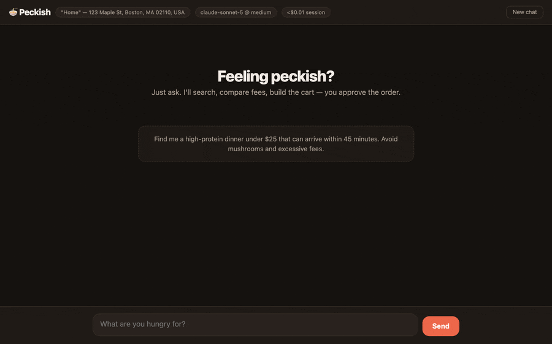

Feeling peckish? Just ask.
An AI agent that orders food on DoorDash — it searches, compares the real totals with fees included, builds the cart, and hands the final decision back to you.

Everything runs on your own Mac. Pick the surface that fits you.
Claude Desktop or Claude Code becomes the ordering agent. Your Claude subscription powers the model.
One double-click. No terminal, no Node.js, no JSON config to edit.
A chat REPL and a local web UI with store cards, a live quote and a Stop button. Needs an Anthropic API key.
A double-clickable app with guided setup, for people who never open a terminal.
The gate is rendered by the app, not decided by the model.
yes in the terminal, click Place order in the web modal, or approve the dialog in Claude Desktop. Decline and it backs off.~/.peckish/logs/.| Comparison shopping | Builds carts at up to three finalists, compares true totals, fee share and ETA, recommends one, then deletes the losers. |
| Fee tactics | Scans promos with your consent, compares pickup against delivery, surfaces DoorDash credits and DashPass status. |
| Memory | "Never mushrooms, ever" sticks — dietary rules and habits persist across sessions and surfaces. |
| History | Derives "my usual" from order frequency, gives honest spend breakdowns from receipts, and flags items silently dropped from a reorder. |
| Beyond restaurants | Groceries, retail, pets, pharmacy and alcohol; scheduled delivery, pickup, and work benefits with company budgets and expense codes. |
You need three things:
1. A Mac with Apple Silicon. Peckish is local-first — your Mac is the backend on every surface, because DoorDash sign-in lives in your keychain. There's no hosted version, and that's deliberate.
2. DoorDash CLI access. Peckish is built on DoorDash's official dd-cli, which is currently waitlist-gated by DoorDash. Without access, Peckish can't order for you yet.
3. An Anthropic API key — for the terminal and web surfaces only. Use the MCP surface instead and your Claude subscription covers it.